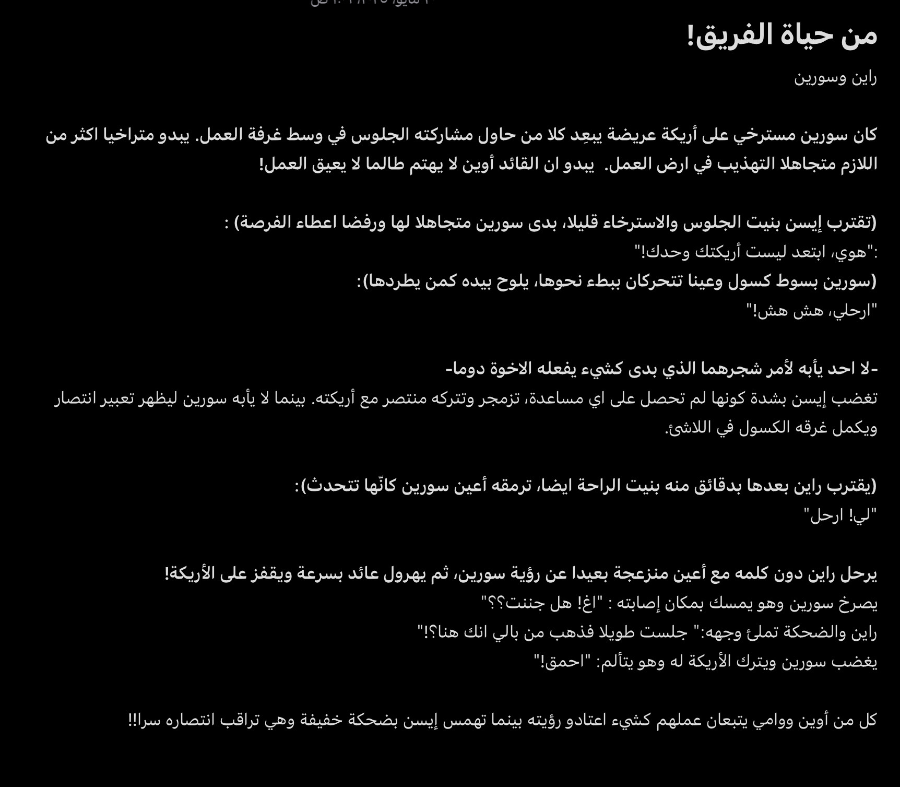

Welcome to my Writing Corner
Last Update: May 2025
I write to breathe. This is the simplest page in my blog—no goal, no pressure, just quiet joy. After graduation, I began writing daily, and I hope these humble snippets bring a moment of reflection to whoever reads them.
I only started taking writing seriously after college. It became my silent outlet—side
by side with drawing and coding. It allows me to explore what I can’t yet say aloud. Below are excerpts from a story still growing, still becoming.
Perhaps someday, it will find its place in the world.
From the story “Roots and A Star”:
Currently available only in Arabic

